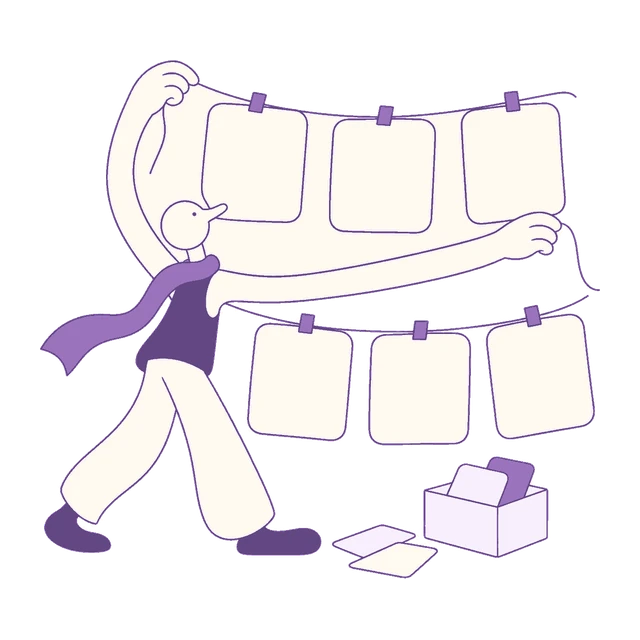

慎独 · 65幅复盘插画
用于历史复盘和行动验证；点击图片可查看原始PNG。各组旁附概览图标，便于核对画风和配色。

串起一年里程碑yearly-01-year-milestones看见自己的成长yearly-02-year-growth保留值得的东西yearly-03-year-keep向过去轻轻告别yearly-04-year-release找到新的坐标yearly-05-year-coordinate把目光交给未来yearly-06-year-horizon重大决策 · 6 幅
独立场景 · 对应概览类别配色
先问清问题decision-01-decision-question把事实摆上桌decision-02-decision-facts比较可走的路decision-03-decision-options为风险留余地decision-04-decision-risk踏出可逆的一步decision-05-decision-first回到结果里检验decision-06-decision-return